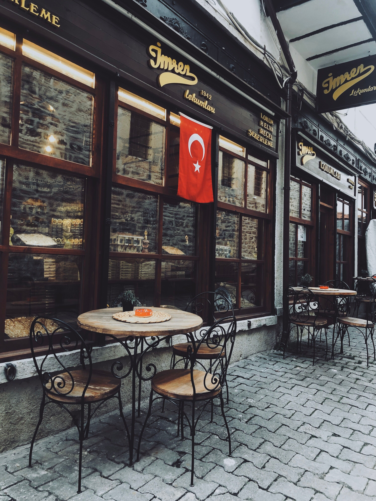

The Places We Remember
Why certain streets, rooms and landscapes stay with us long after a journey ends.
Read more →TRAVEL · CULTURE · DESIGN
An independent journal exploring beautiful places, thoughtful spaces and the quiet details that make a journey memorable.
Explore the journal ↗
ABOUT LUMA
Luma Journal collects thoughtful stories about travel, culture, design and the everyday places that stay with us.